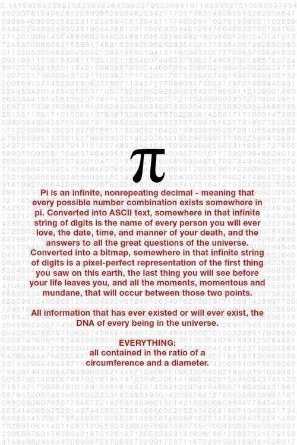

What do mathematicians say about this picture shared on 9gag, claiming that all information is found in the digits of π?

AAARGH!!! When will this nonsense go away?!
Never. It will never go away, I'm desperately certain. A hundred years from now people will still be sharing this hackneyed hokum. A thousand years in the future, using technologies we can't even comprehend, individuals of future generations will be wasting each other's time and depleting the collective intellect of all humanity by trying to convince each other that \pi is magic, \pi can see through your heart, \pi has all the answers and all the questions and all there was and is and will ever be.
This is astounding to me. Not only is it false and misleading, I can't fathom why anyone would care about it had it been true. It is so easy, so stupefyingly trivial, to conceive of a sequence of characters or numbers or bits that does indeed contain everything that is true - along with everything that is false, a trillion wrongs for every right, astronomical amounts of junk for every little phrase of value or beauty, it is so damn obvious that it is a complete mystery to me how anyone can find any shred of interest in this inane idiocy.
You want a sequence that contains "the name of everyone you will ever love" in some encoding, ASCII, whatever? The "answers to all the great questions of the universe"? The "DNA of every being in the universe" (let's pretend this makes any sense)?
Are you ready for this?
Deep breath.
Here we go:
1, 2, 3, 4, 5, 6, 7, 8, 9, 10, 11, 12, 13, 14, 15, 16, 17, ...
You really need this as the decimal expansion of a real number?
Wait for it...
0.1234567891011121314151617...
Do you see why? Every finite piece of knowledge, every chunk of text however long, every image, every sequence of audio lectures, any one of those things can be converted to a sequence of bits (and indeed is so converted, routinely, in your smartphone or laptop or the Amazon servers). If you want to know how, there's a Quora answer for that. So every finite piece of knowledge can be represented as a natural number (or a long sequence of digits, either one), and every such number shows up somewhere in the sequence 1, 2, 3, ...
Of course, along with all the true statements and all the copies of each and every Dickens novel translated into all languages, this sequence also contains each such novel with all possible combinations of typos, missing paragraphs, and countless variations involving Hungarian language excerpts of Dr. Seuss, 16th century gardening tips, and misrepresentations of lectures on Elgar's cello concerto. Yes, not a very useful source of truth, knowledge or value.
Now, is this mystery number which contains all knowledge (and all nonsense) unique? Goodness no. There are infinitely many variations of it that are just as good. Here's one:
0.12300002300004567800000230000091011120000002300000....
The hilarious yet heartbreaking irony here is that despite the fact that such numbers are totally trivial to manufacture, and despite the fact that there are uncountably many of them, it just so happens that we don't actually know if the illustrious \pi is one. It might be, in fact it very likely is, but we don't know that. As far as we know, the digits in the decimal expansion of \pi may actually fail to contain any Shakespeare sonnet, or the poem Jabberwocky, let alone longer meaningful things.
Moreover, although we don't know if this is true of almost any other explicit number like \sqrt{2} or e, in all likelihood they are just as knowledge-complete as \pi is. It makes absolutely no sense to tout \pi as having any special place in this regard.
Let's conclude with a step-by-step analysis of the 9gag profundity quoted in the question:
- "Pi is an infinite, non-repeating decimal" - no it's not. \pi is a real number, and like any real number it has many, many representations, one of which is its decimal expansion. Like any irrational number, this expansion is not repeating. Nothing special here. Pro tip: every piece of text that starts with "Pi is an infinite decimal" ends in heartbreak.
- "...meaning that every possible number combination exists somewhere in pi" - False. Being non-repeating doesn't mean anything of the sort. The number 0.17117111711117111117... is irrational, since its decimal expansion is not repeating, yet it fails to ever contain the digit 2. In fact, we don't actually know if the decimal expansion of \pi contains every finite sequence of digits. Nobody knows if it ever contains 999999999999999, for example, let alone the complete DNA of any human being.
- "...the name of every person you will ever love..." - yeah, and actually also "the name of every person, period". Even "ALON" in ASCII (65767978) occurs in position 132,155,589 in the decimal expansion of \pi (yes, really). Will you ever love me?
- "...the date, time and manner of your death". And also the date, time and manner of Vladimir Putin's next trip to the loo. Fascinating.
To end on a positive note, here's one of the images which, properly encoded, appears somewhere in the sequence 1, 2, 3, 4, ...
[For a shorter, less annoyed and possibly less funny version of this answer, see this older question.]